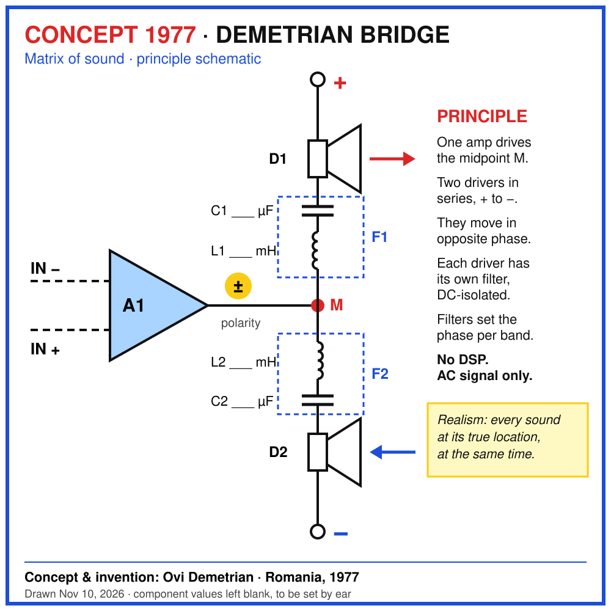
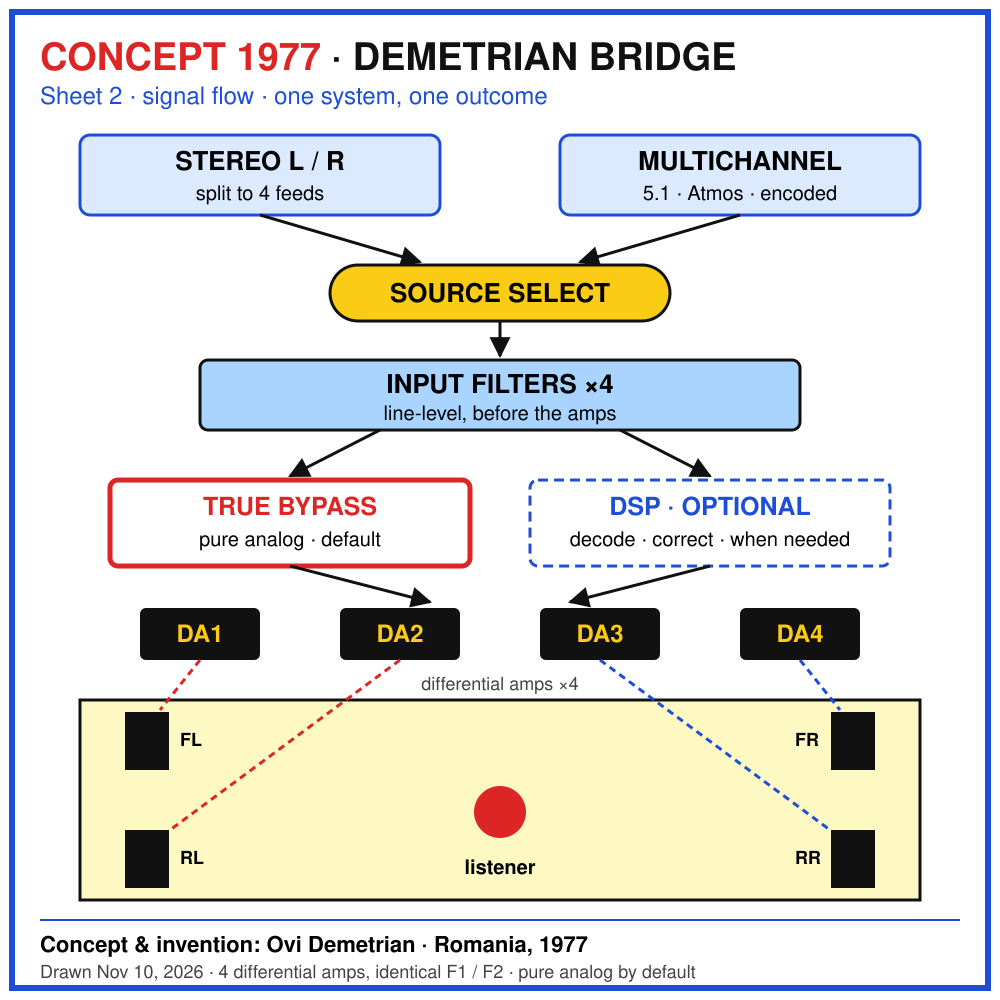

CONCEPT 1977
Demetrian
Bridge
A matrix of sound. Four speakers, one listener, one outcome.
The idea
Most spatial audio fakes the room in a processor. The Demetrian Bridge does the opposite: it leaves the recording alone. The image the musicians, the engineer or the film director created comes through as they made it, spread naturally around the listener by four real sources.
The depth comes from physics, not from a chip. The phase relationship between drivers, set together with their crossovers, opens the recorded image into three dimensions without adding anything to it.
Realism: every sound at its true location, at the same time.
1977 · Romania
As a teenager, Ovi Demetrian built four cabinets, three drivers each, with filters he made by hand. He couldn't afford speakers, so he repaired old radios for money, salvaged drivers from the ones that couldn't be fixed, traded for more and found the rest at a flea market.
He placed the four cabinets around his room, played Kraftwerk's Trans-Europe Express, and experimented with cones out of phase until the train felt physically present. Not spread around. Arriving.
A patent was started and never finished. The idea stayed in his head for almost fifty years. These drawings put it on paper.
How it works
- Differential amps. Each amp drives the midpoint between two drivers wired in series, from + to −. The two drivers move in opposite phase.
- Filters set the phase. Each driver has its own filter, DC-isolated. The phase per band is shaped by the crossover, not by a processor.
- ×4, identical. Four differential amps with identical speaker filters keep the room symmetrical. Line-level input filters of a different type sit before the amps.
- Pure analog by default. True bypass keeps the signal analog from input to cone. DSP is an option, used only when the material needs it, such as decoding.
- Selectable source. Stereo or multichannel (5.1, Atmos), so today's already-encoded material can cross the bridge too.
- One bridge. The whole system is the bridge. Everything bridges to one outcome: the listener in the chair.
The drawings


Status
CONCEPT · NOT YET BUILT
The principle and signal flow are drawn. Component values are left blank on purpose. They are meant to be set by ear, in the chair. It has to be heard.